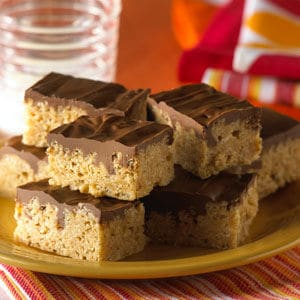

Chocolate Scotcheroos

Description
It's fun to say. They're fun to make. And, thanks to the chocolate, butterscotch and peanut butter, they're even more fun to eat.
Ingredients
- 6 cups Kellogg's® Rice Krispies® cereal
- 1 package (6 oz., 1 cup) semi-sweet chocolate morsels
- 1 cup butterscotch chips
Instructions
- Place corn syrup and sugar into 3-quart saucepan.
- Cook over medium heat, stirring frequently, until sugar dissolves and mixture begins to boil.
- Remove from heat. Stir in peanut butter. Mix well.
- Add KELLOGG'S RICE KRISPIES cereal. Stir until well coated. Press mixture into 13 x 9 x 2-inch pan coated with cooking spray. Set aside.
- Melt chocolate and butterscotch chips together in 1-quart saucepan over low heat, stirring constantly.
- Spread evenly over cereal mixture. Let stand until firm. Cut into 2 x 1-inch bars when cool.
Back to Recipes